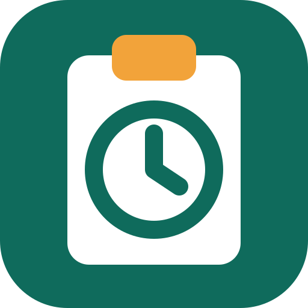
Come segnare le ore di lavoro
Una guida semplice, un passo alla volta.
La cosa più importante: a fine giornata apri l'app e tocca Giornata normale. Fatto.
Tutto il resto serve solo quando la giornata è andata in modo diverso.
Stai tranquillo: non puoi rompere niente. Se sbagli, correggi. Ogni modifica viene conservata, quindi si può sempre recuperare quello che c'era prima.
1 Entrare la prima volta
- Apri questo indirizzo:
saveriomorelli.com/projects/dad/rendicontazione - Tocca il pulsante blu Continua con Google.
- Scegli il tuo account Google.
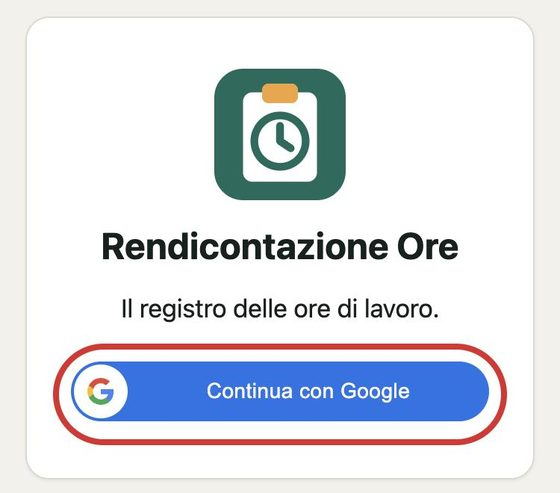
Lo fai una volta sola: poi il telefono si ricorda di te e l'app si apre direttamente.
Se compare la scritta Quasi fatto, il tuo account deve ancora essere approvato. Avvisa Saverio.
2 Mettere l'icona sul telefono
Così apri l'app con un tocco, come WhatsApp, senza cercare l'indirizzo.
Con un telefono Android
- Apri la pagina con Chrome.
- Tocca i tre puntini in alto a destra.
- Tocca Aggiungi a schermata Home (può chiamarsi anche Installa app).
Con un iPhone
- Apri la pagina con Safari.
- Tocca il pulsante Condividi (il quadrato con la freccia verso l'alto).
- Tocca Aggiungi alla schermata Home.
Sul telefono comparirà questa icona, con il nome Ore:
3 Segnare una giornata normale
È quello che farai quasi tutti i giorni.
- Apri l'app.
- Tocca il pulsante verde Giornata normale.
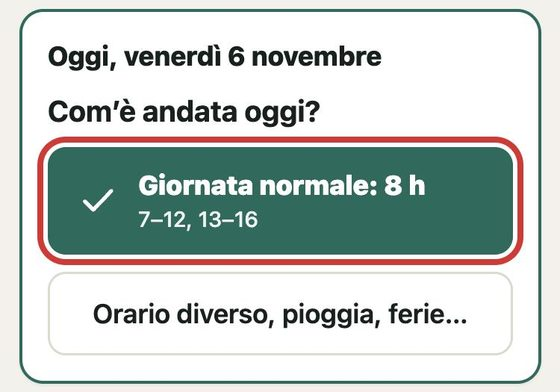
Basta così. In basso compare Salvato e accanto a oggi vedi il segno di spunta.
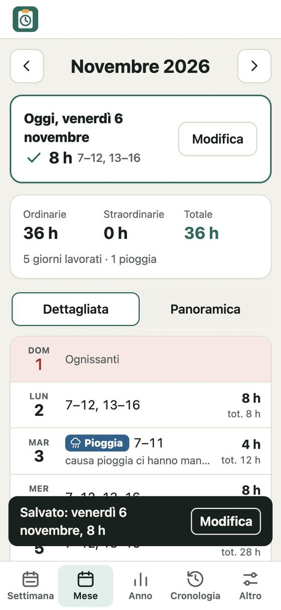
L'orario è giusto? Sotto il pulsante è scritto l'orario che verrà segnato, per esempio 7–12, 13–16. L'app lo impara dagli ultimi giorni: se d'estate cambi orario, dopo qualche giorno si adegua da sola. Di sabato propone l'orario del sabato.
4 Pioggia, permesso o un orario diverso
- Tocca Orario diverso, pioggia, ferie… (il pulsante sotto a quello verde).
- Tocca che giornata è stata: per esempio Pioggia o Permesso.
- Sotto Orari rapidi tocca l'orario che ti serve: Pioggia, a casa segna dalle 7 alle 11.
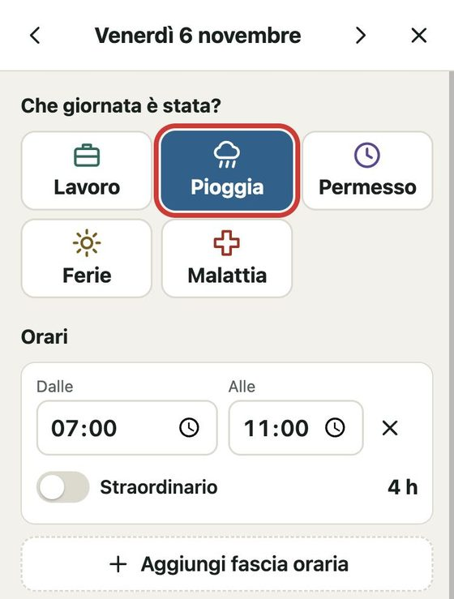
Se l'orario è diverso da quelli pronti
- Tocca i numeri sotto Dalle e Alle e scegli l'ora.
- Se hai fatto la pausa, tocca Aggiungi fascia oraria e scrivi la seconda parte della giornata.
- Per togliere una fascia, tocca la X accanto.
Poi, se vuoi, scrivi una nota
Scorri in basso e scrivi nel riquadro Note, per esempio a che ora hai timbrato. Infine tocca Salva.
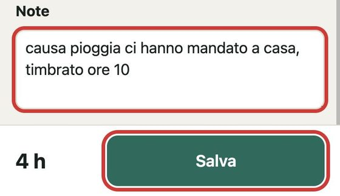
In basso a sinistra vedi sempre il totale delle ore del giorno. Niente viene salvato finché non tocchi Salva.
5 Segnare lo straordinario
- Apri il giorno e, sotto Orari rapidi, tocca Con 1 ora di straordinario.
- Se l'orario è diverso, aggiungi la fascia delle ore in più e accendi l'interruttore Straordinario: il riquadro diventa arancione.
- Tocca Salva.
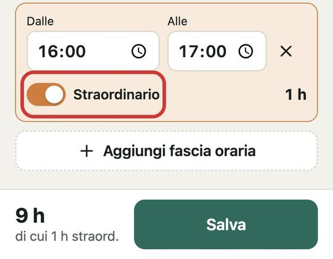
Sabato e feste: il sabato l'orario proposto è già tutto straordinario. Se lavori in un giorno di festa, apri il giorno e tocca Solito orario: anche in quel caso le ore risultano tutte straordinarie.
6 Segnare ferie o malattia
- Tocca Orario diverso, pioggia, ferie…
- Tocca Ferie oppure Malattia.
- Tocca Salva. Gli orari non servono.
7 Correggere un giorno o segnarne uno dimenticato
- In basso tocca Mese.
- Tocca il giorno che ti interessa. Per un altro mese usa le frecce ‹ e › accanto al nome del mese.
- Cambia quello che serve e tocca Salva.
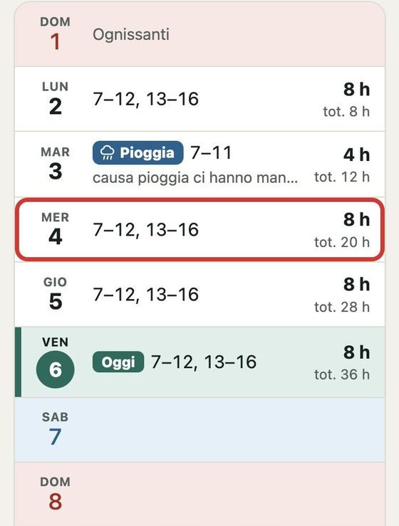
Per togliere del tutto un giorno, aprilo, scorri in fondo e tocca Cancella questa giornata.
Ti sei dimenticato qualche giorno?
L'app te lo ricorda con il riquadro giallo Manca un giorno. Tocca il giorno per aprirlo. Se era una giornata normale, in Settimana c'è il pulsante Segna con l'orario solito, che lo segna subito.
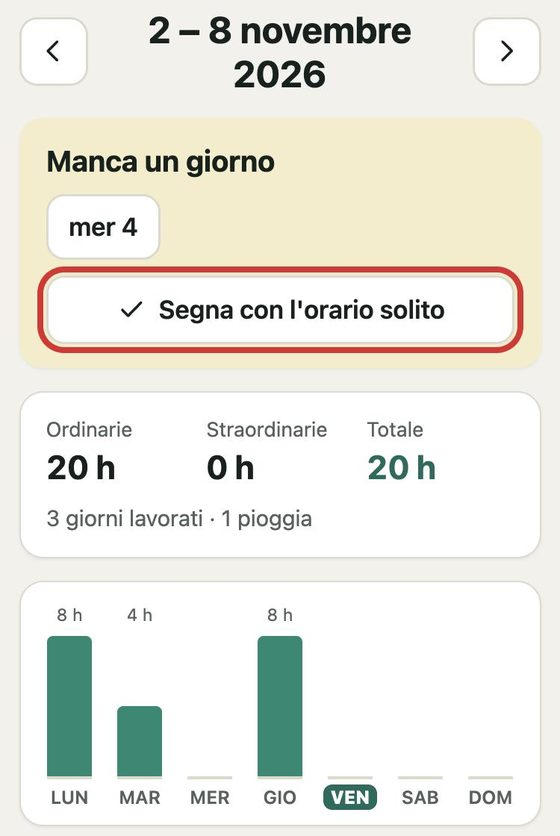
8 Vedere quante ore hai fatto
In basso ci sono sempre questi pulsanti:
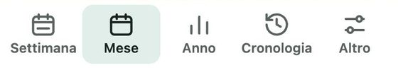
- Settimana
- Le ore da lunedì a domenica, con un grafico.
- Mese
- Tutti i giorni del mese, come il foglio Excel. Il giorno di oggi è in verde, con la scritta Oggi. I sabati sono azzurri, le domeniche e le feste rosa. Con Panoramica li vedi come un calendario.
- Anno
- I totali di tutti i mesi. Tocca un mese per aprirlo.
- Cronologia
- Tutte le modifiche fatte.
- Altro
- Stampa, Excel, scritte più grandi e questa guida.
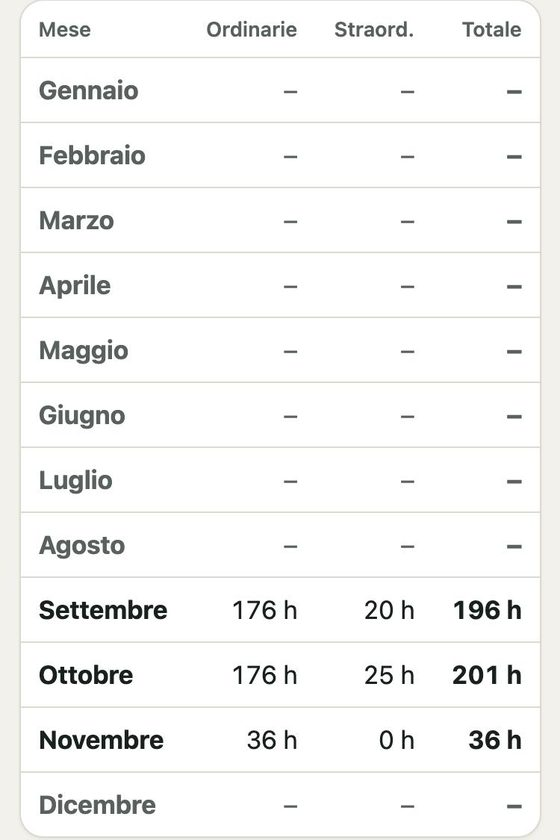
Cosa vogliono dire le scritte
- 7–12, 13–16
- Dalle 7 alle 12 e dalle 13 alle 16.
- 8 h
- 8 ore. 8 h 30 vuol dire 8 ore e mezza.
- Ordinarie
- Le ore normali.
- Straordinarie
- Le ore in più.
- tot. 20 h
- Le ore fatte dall'inizio del mese fino a quel giorno, come la colonna «Totale ore parziale» del foglio Excel.
9 Controllare le modifiche
In Cronologia vedi chi ha cambiato cosa, quando, e com'era prima.
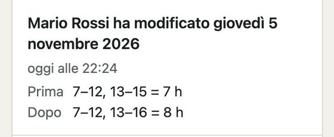
Da qui puoi solo guardare. Se hai sbagliato, correggi il giorno dal Mese. Per annullare una modifica dalla cronologia chiedi a Saverio.
10 Ingrandire le scritte
- In basso tocca Altro.
- Scorri fino ad Aspetto.
- Sotto Dimensione del testo tocca Grande.
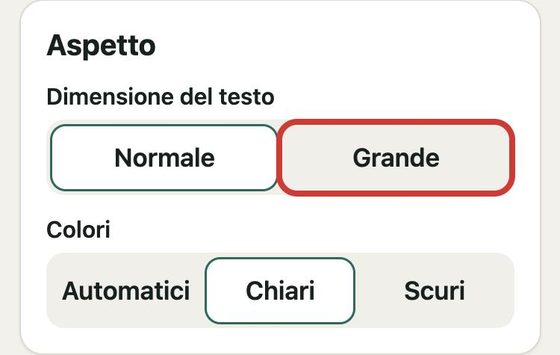
Sempre in Altro trovi Stampa, per stampare il mese, e Scarica Excel, per avere tutto l'anno in un file come quello di prima.
11 Se qualcosa non va
- «Connessione assente»
- Il telefono non ha internet e non ha salvato. Aspetta di avere campo, o collegati al Wi-Fi, e tocca di nuovo Salva.
- «La fine deve venire dopo l'inizio»
- Controlla gli orari di quella fascia: forse Dalle e Alle sono invertiti.
- «Compila sia l'inizio sia la fine»
- In una fascia manca un orario. Scrivilo, oppure togli la fascia con la X.
- «Due fasce orarie si sovrappongono»
- Due fasce occupano la stessa ora. Controlla gli orari.
- Mi chiede di accedere di nuovo
- Tocca Continua con Google: le tue ore sono al sicuro.
- Ho toccato Giornata normale per sbaglio
- Tocca Modifica accanto a oggi e sistema il giorno.
- Non trovo più l'app
- Riapri l'indirizzo che trovi al punto 1.
Hai ancora dubbi? Chiama Saverio. Non cancellare niente per provare: il più delle volte basta correggere il giorno.